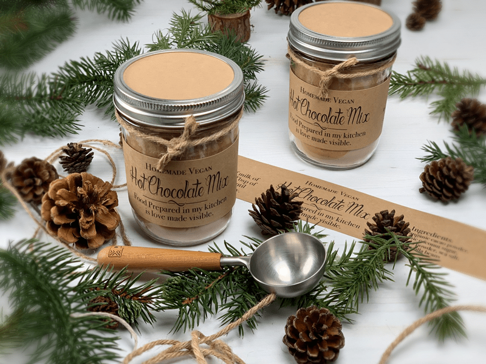

Polar Express Hot Chocolate Mix
For those times when you want a rich, creamy hot chocolate but don’t want to use those store bought brands that are loaded with undesirable ingredients… this homemade hot chocolate mix is made of simple ingredients but has all the creaminess and chocolate you could ask for… just the way Polar Express Hot Chocolate should be. Curl up on the couch, cradling a warm mug of hot chocolate and watch some Christmas classics.

Let’s Talk About Milk
The liquid that you choose to use for your cup of hot chocolate will affect the consistency, the mouth-feel, how it coats your mouth and throat. Non-dairy kinds of milk that are higher in fat will give the hot chocolate a more velvety mouthfeel. The kind that coats your tummy as though you just received a warm embrace.
You can use water, but it won’t be near as rich and creamy. Fresh homemade almond milk is my favorite. If you like a thicker viscosity, make your almond milk with less water so it is thicker. Coconut milk is another great option. If you don’t care for the taste of coconut, skip this version because there will be a slight undertone of coconut.. as one might expect. You can also use walnut and pecan milk for a twist on hot chocolate. So many possibilities to fall in love with.
Want a Frothy Hot Chocolate?
Are you aiming for a frothy mustache after you take a sip of your hot chocolate? (giggles) If so, the blender is your friend. You can blend and heat the hot chocolate mix and milk in a high powered blender instead of a pan on the stove top. Even if you heat the hot chocolate in a pan, pour it into the blender and blend on high for about thirty seconds. This will create a really frothy drink. Be careful when blending hot ingredients. Make sure that the lid is vented so the lid doesn’t pop off. I go as far as draping a dishcloth over the top while it blends just to be safe.
Add Essential Oils to Your Cup
Adding essential oils to your cup of hot chocolate is totally optional, but one tiny drop can ramp up not only the flavor of your drink but it adds other health benefits. I like using essential oils because ground cinnamon and nutmeg can be hard to dissolve, so the flavor doesn’t get dispersed as evenly and you can end up with a big mouthful of spice as you take your last sip from the mug. You could add the dry spices to the overall recipe, that way they dissolve better under the heat. Here are just a FEW ideas of oils that you can use. For more inspiration, check out all the different oils that are perfect for the culinary world. Click (here). *Make sure that any essential you ingest are culinary grade.
Cinnamon Oil Benefits
- Can support healthy digestion.
- Helps maintain a healthy immune system.
- Is anti-inflammatory, antibacterial, and has been used since ancient times to treat sore throats, arthritis, and coughs.
Nutmeg Oil Benefits
- Can be used to treat muscular and joint pain, reducing swelling of the joints.
- Helps increase blood circulation.
- Is an essential part of Chinese medicine when it comes to treating abdominal pain, indigestion, and inflammation.
- Helps support cognitive function.
- Provides immune support and powerful antioxidants.
Peppermint Oil Benefits
- Peppermint Vitality can support healthy digestive function and gastrointestinal comfort.
- Enhances healthy gut function.
- Maintains efficiency of the digestive tract.
- Reduces feelings of discomfort after large meals.
Ginger Oil Benefits
- Adds a spicy note.
- Ginger essential oil is one of the best natural remedies for colic, indigestion, diarrhea, spasms, stomach aches and even vomiting. Ginger oil is also effective as a nausea natural remedy.
- According to the University of Maryland Medical Center, ginger essential oil has the power to reduce cholesterol levels and blood clotting.
Gift Idea
This hot chocolate mix is perfect for gift giving. Just package it up in a jar or bag, write the directions and gift it to neighbors, family or friends! Easy, holiday gift! I plan on keeping it out on the counter so our friends and loved ones can whip up a quick cup of cocoa and at the same time it doubles as a cute holiday decor item.
 Ingredients:
Ingredients:
Yields: 3 1/2 cups dry mix
Preparation:
-
In a large mixing bowl or in the food processor, thoroughly combine the cacao powder, sugar, vanilla, and salt.
- If possible, run the dry ingredients through a pastry sifter. This will help eliminate lumps.
- I powdered the coconut sugar in my Bullet. This helps with dissolving the mix.
-
For gifting, scoop mixture into individual jars and store for up to three weeks in a cool, dry place.
-
Serving directions: Add 2 tablespoons of the mix to a cup of milk, whisk together, and heat till warm.
- If adding essential oils, do so right before serving (don’t add to the pan while heating). Introduce flavor by swirling a toothpick dipped in your favorite essential oil.
- Want to be whimsical? Use a cinnamon stick as a straw. Just be careful that it’s not to hot and don’t burn your throat.
© AmieSue.com